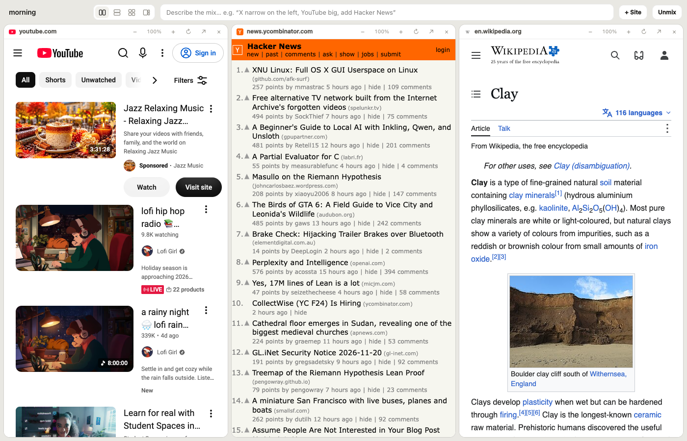
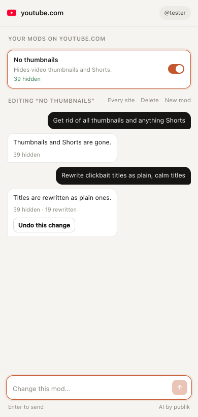
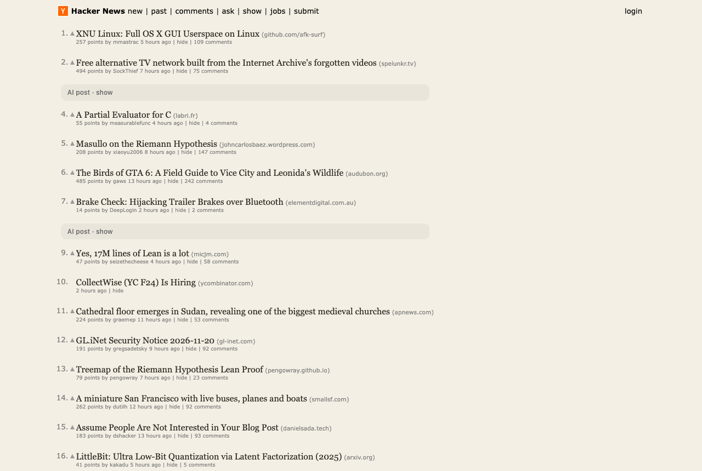
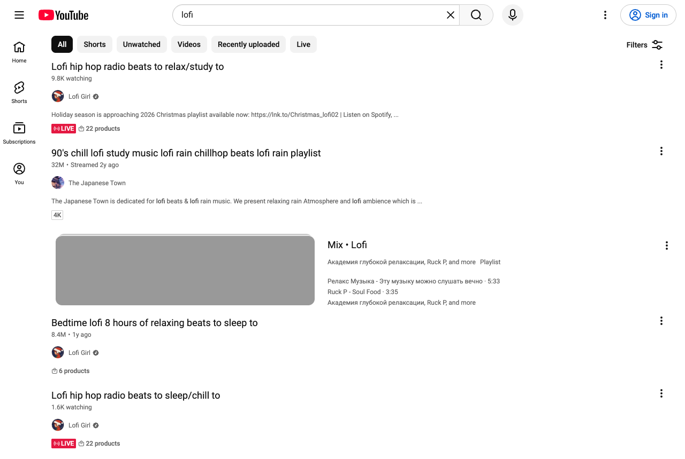

built by @forkthis_ai
built by @forkthis_ai
Make the internet yours again.
A free Chrome extension. Open it on any website, say how you want it to look or behave, and it changes. Filter the slop with AI, kill thumbnails, restyle anything, and mix your tabs into one.

A tab group mixed into one tab. Resize, swap, zoom, or describe the layout.

The side panel: say it, it's done, with live counts and undo.
Say it. The site changes.
Remold reads the page, writes the change, tries it, checks what it caught, and fixes itself if a piece missed. Every change is a switch you can flip off.
Hide posts on X that look AI-writtenAn AI reads each post and collapses the ones that are.
Get rid of thumbnails and ShortsGone on every YouTube page, every visit.
Rewrite clickbait titles as plain onesTitles you can actually trust.
Open YouTube on my subscriptionsThe home feed never loads again.
Warm paper colours and a serif fontAny site, restyled end to end.
Tag every post with its toneAI reads whatever's on screen, live as you scroll.
Press J for the next postSmall interactions, added by asking.

Hacker News, calmer, with AI posts collapsed (click to show one).

YouTube without thumbnails, titles in plain words.
Install
Until it's on the Chrome Web Store, it takes a minute:
- Download remold-0.2.0.zip from the latest release and unzip it.
- Open
chrome://extensionsand turn on Developer mode. - Click Load unpacked and pick the unzipped folder.
- Click Remold's icon (⌘⇧Y) and Sign in with publik.
Free on publik. publik is a free software marketplace with a mission: free software for everyone. Using Remold through publik earns its builder a share of usage, which keeps it free. Make a free publik account and sign in from the extension.
publik